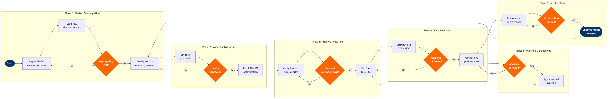

| Step | L4 Step Name | KPI / Target | Pain Point / Risk | Gate |
|---|---|---|---|---|
| 1.1 | Ingest competitor fare data via ATPCO feed | Feed ingestion latency ≤15 min from ATPCO publication window | ATPCO fare filings lag real-time competitor NDC-direct pricing by 20-40 min, creating competitive blind spots on 20-30% of market fares during high-demand windows | |
| 1.2 | Load demand signals and booking pace from NRM | Demand signal refresh cycle ≤4 hrs for departures within 0–14 days | NRM demand forecasts calibrated on historical booking patterns underweight demand spikes from social media trends or flash sales by competitors, skewing price recommendations | |
| 1.3 | Validate data completeness and quality gate | Data completeness score ≥95% before optimization run proceeds | Missing competitor fare data on thin routes (sub-daily frequency) triggers default pricing rules that undercut yield targets by 10–15% on marginal markets | ⚠ |
| 2.1 | Configure fare class elasticity parameters | Parameter review cycle ≤30 days; elasticity model R² ≥0.85 per market cluster | PROS RM elasticity models require minimum 12 months of booking history — new or thin routes lack sufficient data for reliable calibration, requiring manual overrides that degrade model integrity | |
| 2.2 | Set fare floor and ceiling guardrail rules | Guardrail coverage 100% of active markets before each daily optimization run | Cost floor benchmarks require coordinated input from Finance (SAP S/4HANA FI/CO) but finance data latency averages 24–48 hrs, creating risk of stale floor values during fuel price volatility | |
| 2.3 | Review and approve pricing model configuration | Configuration approval cycle ≤4 hrs for routine updates; ≤24 hrs for structural changes | PROS RM configuration lacks automated rollback capability — a misconfigured elasticity parameter can propagate to thousands of published fares before detection, requiring manual ATPCO correction filings | ⚠ |
| 3.1 | Run dynamic pricing optimization engine | Optimization run completion ≤20 min for full network; recommendation coverage ≥98% of active O&Ds | PROS RM compute time exceeds SLA during IROPS events when demand signals are highly volatile, delaying fare updates during the highest-yield recovery window by 30–60 min | |
| 3.2 | Apply business rules overlay and sanity checks | Business rule violation rate ≤0.5% of recommended fares per optimization run | Automated ceiling rules set for normal demand periods suppress legitimately high fares during demand surges, capping revenue on peak routes by an estimated 3–5% during holiday windows | |
| 3.3 | Validate fare recommendations against guardrails | Auto-approval rate ≥90% of recommendations; manual review queue cleared within 30 min | ATPCO filing windows (20-min cycles) create time pressure that incentivises skipping manual review of exception fares, increasing risk of erroneous public fares reaching GDS and NDC channels | ⚠ |
| 4.1 | File approved fare set to ATPCO | Filing-to-live latency ≤20 min (ATPCO standard distribution cycle) | ATPCO filing errors (invalid rule codes, tariff mismatches) trigger rejection queues requiring manual re-filing, delaying competitive fare responses by 40–60 min during time-sensitive price match windows | |
| 4.2 | Distribute fares across GDS and NDC channels | GDS channel sync latency ≤30 min; NDC direct channel sync ≤5 min post-filing | GDS fare synchronisation lags behind NDC direct channels by 20–25 min, creating temporary price disparities that trigger OTA parity violation claims under distribution agreements | |
| 4.3 | Confirm fare availability in Altéa PSS | PSS availability confirmation within 35 min of ATPCO filing; availability accuracy ≥99.9% | Altéa availability caching can serve stale fares to agents for up to 15 min after updates, causing booking conflicts and involuntary re-pricing that generates customer service escalations | ⚠ |
| 5.1 | Monitor live fare performance and revenue metrics | Revenue variance vs. forecast ≤±5%; alert response time ≤15 min from threshold breach | AWS Redshift analytics pipeline has 5–10 min data latency, insufficient to detect and correct pricing errors on high-frequency short-haul routes before significant booking volume accumulates at wrong fares | |
| 5.2 | Detect pricing anomaly and trigger override review | Anomaly-to-action cycle ≤30 min; false positive alert rate ≤10% | PROS RM anomaly detection thresholds tuned for normal operations generate excessive false positives during promotional events, causing alert fatigue and delayed response to genuine pricing errors | ⚠ |
| 5.3 | Apply manual fare override and document rationale | Override filing completion ≤20 min; override documentation rate 100% | Manual overrides not fed back as PROS RM training signals cause the engine to repeatedly recommend the same suboptimal fares, creating a costly correction loop that accounts for 15–20% of analyst override volume | |
| 6.1 | Assess model performance and revenue uplift | Dynamic pricing revenue uplift ≥3% vs. static pricing baseline; model MAPE ≤8% | Attributing revenue uplift to dynamic pricing vs. schedule changes, competitor capacity, or ancillary revenue requires controlled experiment design that lacks standardised methodology at most carriers | |
| 6.2 | Recalibrate model and release updated configuration | Recalibration cycle ≤30 days; post-recalibration uplift improvement ≥1% within 14 days | PROS RM model recalibration requires a 2–4 week data stabilisation period post-change, during which the system operates with lower confidence scores, increasing override frequency and analyst workload by 25–30% | ⚠ |